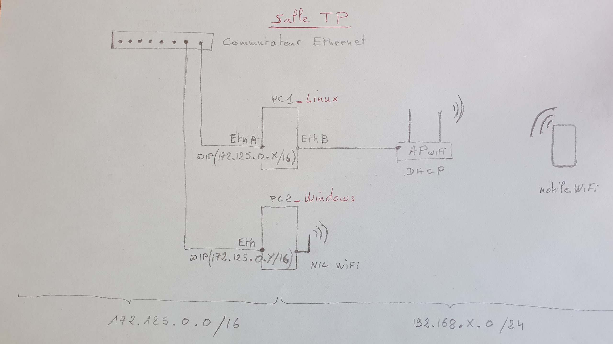

Compétence : Réseaux
Configuration d'un point d'accès wifi et bases du routage

- Missions :
- Configuration du point d'accès wifi.
- Activation du routage et du NAT sur le PC1.
- Connexion du PC2 au point d'accès via le wifi.
- Réalisation de pings pour s'assurer de la connectivité des 2 appareils.
- Vérification de l'accès à internet avec le PC2.
Configuration de routeur Cisco
- Missions :
- Attribution d'adresses IP aux différentes interfaces.
- Création de routes entre plusieurs routeurs.
- Mise en place du protocole de routage RIP.
Administration Système
- Missions :
- Découverte d'hyperviseurs tels que VirtualBox et VMWare ESXi.
- Mise en œuvre d'un système de sauvegarde avec l'outil rsync.
- Installation et configuration de l'Active Directory.
- Découverte de la conteneurisation avec Docker.